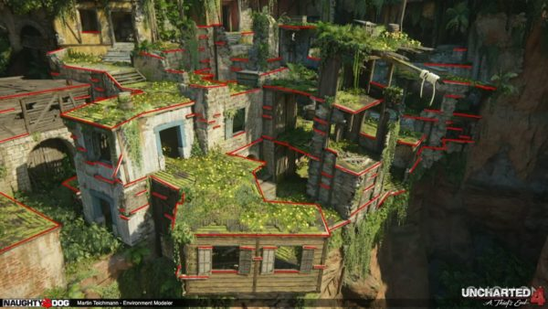

Level Designer :
C’est à partir du gameplay élaboré par le game designer que le level designer conçoit les niveaux, c’est à dire les étapes successives que traversera le joueur.
La tâche du level designer est de concevoir et de construire le parcours du joueur en changeant la difficulté et en assurant la diversité du jeu. Le but est d'assurer une excellente expérience de jeu en plaçant le joueur au cœur de l'univers proposé par le jeu.

Le level designer dessine d'abord le paysage, puis intègre les pictogrammes (personnages, bonus, obstacles, énigmes, etc.) crée par le graphiste. Il utilise ensuite ces pictogrammes pour créer le monde du jeu, ce qui interrompra la progression du joueur et le fera passer d'un niveau à un autre. Il utilise un logiciel spécifique appelé "Level Editor" (Bungie's, UnrealEd ...) pour créer différentes cartes du jeu. La mode du réalisme 3D nécessite désormais l'utilisation de logiciels spécifiques (Studio Max, Maya, etc.).
Le level designer doit avoir une bonne culture iconographique, une forte sensibilité artistique et un sens aigu de l’observation.Rigoureux et organisé, il apprécie le travail d'équipe et possède de bonnes capacités de communication. Il sait surmonter la pression. Il parle couramment l'anglais et du jargon technique.
Entre le S.M.I.C. et 1 600 € brut par mois pour un level designer débutant salarié. Selon qu’il est salarié, intermittent du spectacle ou free-lance, ces chiffres peuvent fortement varier.
Sources: https://www.cidj.com/metiers/level-designer
https://creersonjeu.fr/les-7-cles-pour-creer-de-bons-niveaux-de-jeux-video/
Modeleur numérique ou modeleur 3D :
En ajoutant de la profondeur à la hauteur et à la largeur, la 3D introduit la notion de volume. Le travail du modeleur 3D se situe entre les images fixes réalisées par les infographistes et la programmation informatique.
Après vérification de l'apparence et de la faisabilité du projet, il concrétise la mise en volume à l'aide de logiciels professionnels. Ensuite, les fichiers obtenus peuvent générer des images synthétiques, des films d'animation et des environnements améliorés et des simulations immersives
La modélisation 3D existe dans de nombreux domaines: aéronautique ou automobile, construction, imagerie médicale, jeux vidéo ...
Si le modeleur 3D maîtrise avant tout des logiciels complexes, il doit aussi avoir des connaissances en relation avec le secteur dans lequel il évolue : anatomie, histoire de l’art,architecture, physique… Pour cela, il doit se tenir informé des
dernières innovations en suivant une veille aussi bien artistique que technologique.
Entre 1 800 € et 2 000 € brut par mois pour un modeleur 3D débutant.
Source: https://www.cidj.com/metiers/modeleur-3d
Testeur :
Les testeurs sont de véritables agents de contrôle qualité, chargés de détecter différents types de défauts dans les jeux vidéo. Son rôle est très important, et son avis est respecté car il est dans le succès commercial du produit.
La tâche principale d'un testeur de jeux vidéo est d'évaluer la précision du jeu (traitement, fonction, atmosphère, difficulté générale, etc.) et de trouver les erreurs afin que les programmeurs puissent les corriger avant de vendre.
Afin de pouvoir tirer des conclusions sur tous les aspects du jeu vidéo, il doit anticiper les critiques des futurs joueurs. Pour cette raison, il répète souvent les mêmes gestes et pousse le jeu à la limite, comme essayer d'entrer dans le décor, épuiser la possibilité d'armes, tester des actions imprévues dans la scène, etc.
Afin de déterminer l'erreur, les testeurs ont utilisé différents outils: base de données, logiciel de reporting, logiciel de capture (vidéo, image).
Contrairement aux idées reçues, tester des jeux nécessite de l'expérience et une riche compréhension de la culture du jeu vidéo. Cela demande aussi beaucoup de temps, d'énergie ... et de sérieux!
Les salaires ne sont pas très élevés par rapport aux autres métiers du jeu vidéo. Un testeur est généralement rémunéré à la mission, le plus souvent sur la base d'un S.M.I.C.
A savoir : le testeur a souvent plusieurs employeurs.
Sources: https://www.cidj.com/metiers/testeur-testeuse-de-jeux-video
https://www.pexels.com/fr-fr/photo/a-l-interieur-amour-art-gamer-194511/